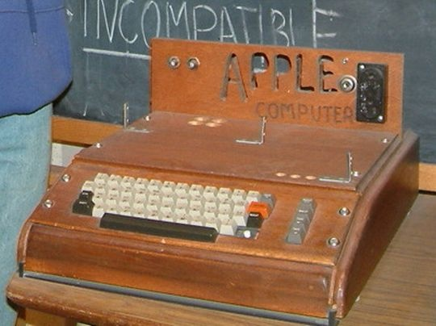

Apple I (также Apple-1) — ранний персональный компьютер, первый компьютер Apple Computer, возможно, первый персональный компьютер, продававшийся в полностью собранном виде.
Компьютер был разработан Стивом Возняком для личного использования. У друга Возняка Стива Джобса появилась идея продавать его. Apple I стал первым продуктом компании Apple Computer (теперь Apple Inc.), продемонстрированным в апреле 1976 года в «Клубе самодельных компьютеров» в Пало-Альто, Калифорния. На одном из собраний «Клуба самодельных компьютеров» Джобс с Возняком впервые устроили презентацию своего компьютера. Стеснительный Возняк, для которого публичное выступление стало настоящим испытанием, обратил внимание на преимущество их устройства, казавшееся ему наиболее важным, — удобный ввод данных с клавиатуры с моментальным их отображением на экране. Затем перед собравшимися выступил Стив Джобс, оказавшийся прирождённым оратором. Говорил он страстно и убеждённо, обращаясь с риторическими вопросами к аудитории. Однако даже в таком привлекательном изложении предложение не вызвало энтузиазма среди слушателей: заинтересованность в приобретении Apple I проявил только один человек. Им оказался Пол Террелл (англ.)рус., владелец компьютерного магазина Byte, недавно открывшегося на El Camino Real в Менло-Парке. На следующий день Джобс заявился к нему в магазин босиком — и заключил сделку, которую они с Возняком потом называли главной в их жизни. Террелл сделал заказ сразу на 50 компьютеров, но его не интересовали печатные платы, ему нужны были компьютеры в полной комплектации, и за каждый он платил 500 долларов. Джобс тут же согласился, хотя для выполнения такого заказа у них не было средств[1]. Требовалось 15 тысяч долларов, но Джобс и тут нашёл выход из положения: 5 тысяч он смог занять у друзей, а комплектующие получил у дистрибьютора Cramer Electronics в кредит на 30 дней, причём поручителем сделал Террелла, который фактически профинансировал весь проект[2]. Компаньоны оккупировали дом и гараж Джобсов. Закипела работа, Стив привлёк всех, кого смог. Его друг Даниэль Коттке и беременная сестра Патти вставляли чипы, получая за это по доллару за плату[3]. Элизабет Холмс, бывшая девушка Даниэля, имевшая опыт в ювелирном деле, поначалу занималась пайкой микросхем. Но когда она случайно капнула на плату припоем, Джобс объявил, что запасных комплектующих у них нет и перевёл её на учёт и оформление документов. Пайку же он взял на себя. Контроль качества и, при необходимости, устранение неисправностей, осуществлял Возняк[2]. Во время этой совместной работы Джобс впервые проявил себя как довольно жёсткий, авторитарный руководитель. Исключение он делал только для Воза, на которого ни разу не повысил голос за всё время их дружбы и сотрудничества. Через месяц заказ был готов: 50 компьютеров компаньоны поставили Терреллу, рассчитались по кредиту за комплектующие. К Apple I не прилагались ни клавиатуры, ни мониторы, ни блоки питания, даже корпусов не было — только полностью укомплектованные системные платы. Несмотря на это, Apple I многими признаётся как первый в истории компьютер, поставлявшийся производителем в готовом виде — ведь другие компьютеры того времени, включая Altair, попадали на рынок в виде наборов, которые предстояло собирать розничному продавцу или конечному покупателю. Внешний вид Apple I явно не совпал с ожиданиями Террелла, но благодаря дипломатическим способностям Джобса он пошёл навстречу и в этот раз, согласившись оплатить заказ. Производство плат обошлось гораздо дешевле, чем предполагалось, так как Джобсу удалось договориться с поставщиком о значительной скидке на комплектующие. На сэкономленные средства удалось собрать ещё 50 устройств, которые Джобс с Возняком распродали знакомым из «Клуба самодельных компьютеров», получив прибыль[4]. В дальнейшем компаньонам удалось реализовать ещё более сотни компьютеров Apple I по другим магазинам и среди знакомых. Элизабет оформили бухгалтером компании с окладом 4 доллара в час, а Клара, мать Джобса, отвечала на звонки под видом секретаря. У клиентов и деловых партнёров, никогда не бывавших в доме Джобсов, складывалось впечатление, что по этому адресу действительно расположена серьёзная фирма с большим штатом. Компьютер появился в продаже в июле 1976 года и выпускался в 1976—1977 годах, было собрано в общей сложности порядка 200 экземпляров устройства[5]. Цена компьютера в продаже составляла 666,66 доллара, как рассказывают, потому что Возняк любил повторяющиеся цифры, и потому что они изначально продавали его в местный магазин по цене в 500 долларов, к которой добавилась наценка в одну треть. В отличие от других любительских компьютеров своего времени, которые продавались в виде набора для сборки, Apple I был полностью собран на монтажной плате, содержащей около 30 микросхем, за что и считается многими первым полноценным ПК. Тем не менее, для получения рабочего компьютера пользователи должны были добавить к нему корпус, источник питания, клавиатуру и монитор. Дополнительная плата, обеспечивавшая связь с кассетным магнитофоном для хранения данных, была выпущена позже по цене в 75 долларов. Apple I иногда называют первым персональным компьютером, продававшимся в полностью собранном виде, однако другие возражают, что эта честь по праву принадлежит другим машинам, таким как MOS Technology KIM-1, Datapoint 2200 или Altair 8800 (который мог быть куплен в виде набора деталей или же собранным за дополнительную плату).
В 2010 году этот раритетный компьютер был выставлен на торги аукционного дома «Кристис». По оценке экспертов, цена составляла от 160 до 240 тысяч долларов[5]. Фактически он был продан за 133 250 фунтов стерлингов[6] (примерно 224 тыс. долларов). В 2013 один из шести рабочих экземпляров модели компьютера Apple I, созданного в 1976 году, был продан за 671 400 долларов[7], что более чем в 1000 раз превышает его первоначальную стоимость. В 2014 году на одном из аукционов в США Музей Генри Форда приобрёл один из рабочих экземпляров Apple I за рекордную цену в 905 00олл., что почти в 1400 раз превышает первоначальную стоимость данного устройства.